◆「情人節2018Pick Up召喚(每日交替)」期間◆
期間:2018年1月31日(三) 17:00～2月15日(四) 11:59
舉辦期間限定「情人節2018Pick Up召喚(每日交替)」！
初登場Servant「★5(SSR)賽米拉米斯」以期間限定登場！
另外本次，只限女性Servant做為對象舉辦「情人節2018Pick Up1召喚(每日交替)」「情人節2018Pick Up2召喚(每日交替)」2種類的召喚。
對象★5(SSR)女性Servant於「情人節2018Pick Up1召喚(每日交替)」及「情人節2018Pick Up2召喚(每日交替)」以每日交替Pick Up，「★5(SSR)賽米拉米斯」常駐Pick Up。
◆「情人節2018Pick Up1召喚(每日交替)」期間◆
期間:2018年1月31日(三) 17:00～2月15日(四) 11:59
◆「情人節2018Pick Up2召喚(每日交替)」期間◆
期間:2018年2月5日(一) 23:00～2月12日(一) 22:59
※賽米拉米斯在Pick Up期間結束後不會追加到故事召喚。
※於每日交替Pick Up的★5(SSR)女性Servant在Pick Up期間結束後也會在故事召喚被抽出。
※請注意「情人節2018Pick Up1召喚(每日交替)」與「情人節2018Pick Up2召喚(每日交替)」舉辦期間有異。
※關於真名尚未判明的Servant，透過主線關卡的進行會讓Servant及一部份寶具的名稱變化。
詳情請在聖晶石召喚畫面左下的召喚詳細確認。
裝備期間限定概念禮裝「★5(SSR)ファラオ・チョコラトル」「★4(SR)はじめてのバレンタイン」「★3(R)ウィッチズ・キッチン」的話，在期間限定活動「情人節2018 ～繁榮的巧克力花園 of 情人節～」中會提升活動専用道具的掉落獲得數。
※「★3(R)ウィッチズ・キッチン」在Pick Up期間中，也能在友情點數召喚獲得。
Pick Up期間中，期間限定Servant、Pick Up Servant、期間限定概念禮裝的出現機率提升！
10次召喚中確定1張★4(SR)以上和確定1位★3(R)以上的Servant！
※確定★4(SR)以上包含Servant和概念禮裝。
※所謂「出現機率提升」意指比同稀有度的Servant及概念禮裝出現機率更高的設定。
◆「情人節2018Pick Up1召喚」每日交替Pick Up內容◆
| 每日交替Pick Up期間 | 每日交替Pick Up內容 |
|---|---|
| 1月31日(三) 17:00～ 2月4日(日) 22:59 |
賽米拉米斯 |
| 2月4日(日) 23:00～2月5日(一) 22:59 | 賽米拉米斯 阿爾托莉亞・潘德拉剛(Saber) |
| 2月5日(一) 23:00～2月6日(二) 22:59 | 賽米拉米斯 莫德雷德(Saber) |
| 2月6日(二) 23:00～2月7日(三) 22:59 | 賽米拉米斯 阿提拉(Saber) |
| 2月7日(三) 23:00～2月8日(四) 22:59 | 賽米拉米斯 俄里翁 |
| 2月8日(四) 23:00～2月9日(五) 22:59 | 賽米拉米斯 阿爾托莉亞・潘德拉剛(Lancer) |
| 2月9日(五) 23:00～2月10日(六) 22:59 | 賽米拉米斯 南丁格爾 |
| 2月10日(六) 23:00～2月11日(日) 22:59 | 賽米拉米斯 貞德(Ruler) |
| 2月11日(日) 23:00～ 2月15日(四) 11:59 |
賽米拉米斯 |
※請注意會以每日交替變更Pick Up的Servant。
※Pick Up期間中，阿爾托莉亞・潘德拉剛(Lancer)就算通過第六特異點前也能入手。
◆「情人節2018Pick Up2召喚」每日交替Pick Up內容◆
| 每日交替Pick Up期間 | 每日交替Pick Up內容 |
|---|---|
| 2月4日(日) 23:00～2月5日(一) 22:59 | 賽米拉米斯 女王梅芙 |
| 2月5日(一) 23:00～2月6日(二) 22:59 | 賽米拉米斯 魁札爾・科亞特爾 |
| 2月6日(二) 23:00～2月7日(三) 22:59 | 賽米拉米斯 弗朗西斯・德雷克 |
| 2月7日(三) 23:00～2月8日(四) 22:59 | 賽米拉米斯 開膛手傑克 |
| 2月8日(四) 23:00～2月9日(五) 22:59 | 賽米拉米斯 刑部姬 |
| 2月9日(五) 23:00～2月10日(六) 22:59 | 賽米拉米斯 玄奘三藏 |
| 2月10日(六) 23:00～2月11日(日) 22:59 | 賽米拉米斯 不夜城的Caster |
| 2月11日(日) 23:00～2月12日(一) 22:59 | 賽米拉米斯 玉藻前(Caster) |
※請注意會以每日交替變更Pick Up的Servant。
※Pick Up期間中，女王梅芙就算通過第五特異點前也能入手。
※Pick Up期間中，魁札爾・科亞特爾就算通過第七特異點前也能入手。
介紹期間限定Servant賽米拉米斯的寶具演出！
在「Fate/Grand Order」官方網站內的公告中，公開了「★5(SSR)賽米拉米斯」的寶具演出。敬請確認。
介紹阿提拉(Saber)、阿爾托莉亞・潘德拉剛(Saber)、莫德雷德(Saber)、俄里翁、阿爾托莉亞・潘德拉剛(Lancer)、南丁格爾、貞德(Ruler)的寶具演出！
在「Fate/Grand Order」官方網站內的公告中，公開了「★5(SSR)阿提拉(Saber)」「★5(SSR)阿爾托莉亞・潘德拉剛(Saber)」「★5(SSR)莫德雷德(Saber)」「★5(SSR)俄里翁」「★5(SSR)阿爾托莉亞・潘德拉剛(Lancer)」「★5(SSR)南丁格爾」「★5(SSR)貞德(Ruler)」的寶具演出。敬請確認。
介紹魁札爾・科亞特爾、弗朗西斯・德雷克、玄奘三藏、玉藻前(Caster)、不夜城的Caster、刑部姬、開膛手傑克的寶具演出！
在「Fate/Grand Order」官方網站內的公告中，公開了「★5(SSR)魁札爾・科亞特爾」「★5(SSR)弗朗西斯・德雷克」「★5(SSR)玄奘三藏」「★5(SSR)玉藻前(Caster)」「★5(SSR)不夜城的Caster」「★5(SSR)刑部姬」「★5(SSR)開膛手傑克」的寶具演出。敬請確認。
【2月4日(日) 23:00追記】
女王梅芙的戰鬥動作及寶具演出翻新！
◆翻新時間◆
2018年2月4日(日) 23:00～
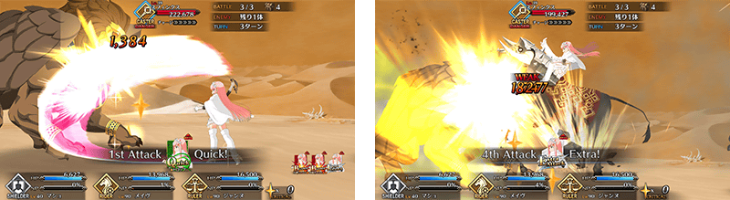
介紹翻新後的女王梅芙寶具演出！
在「Fate/Grand Order」官方網站內的公告中，公開了「★5(SSR)女王梅芙」的寶具演出。敬請確認。

| 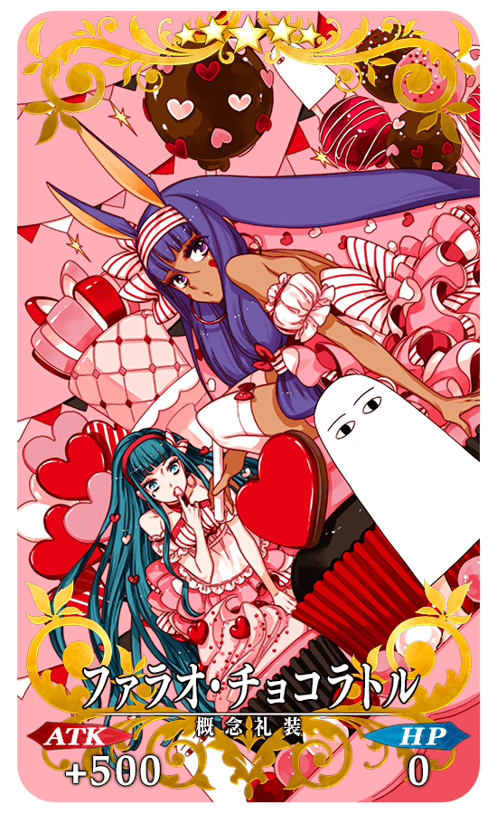 |
★★★★★SSR |
| 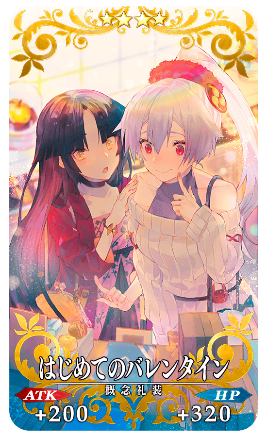 |
★★★★SR |
| 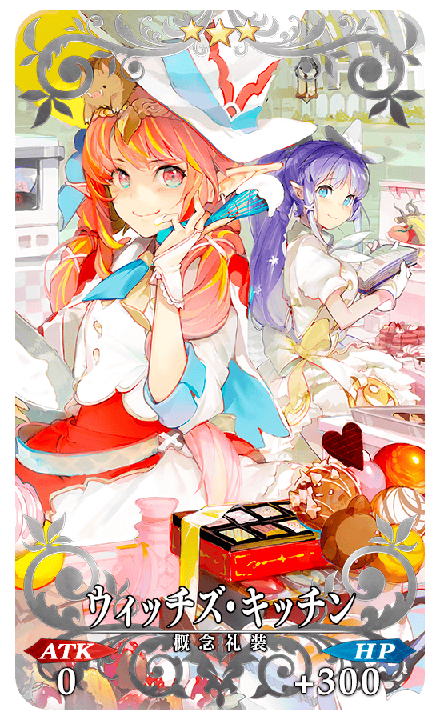 |
★★★R |
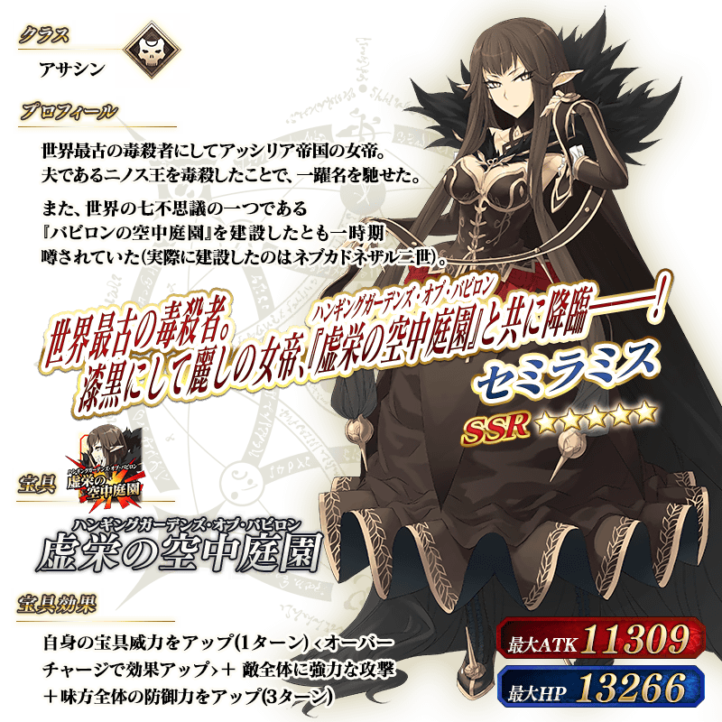

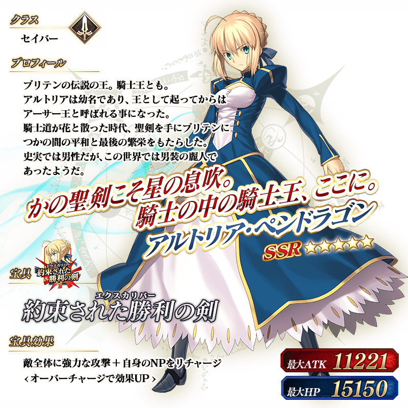
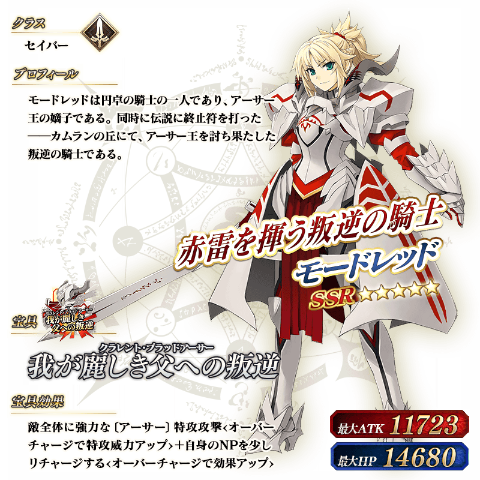

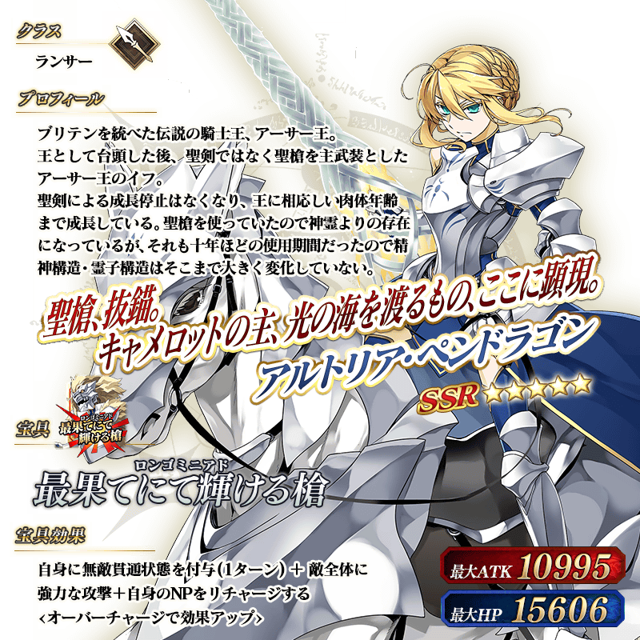
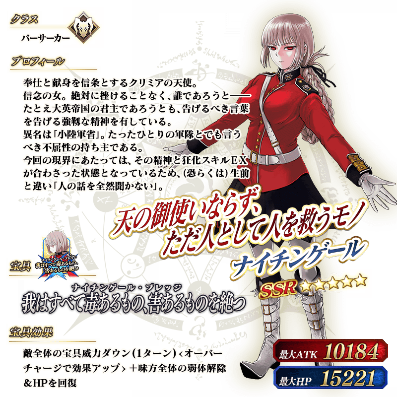
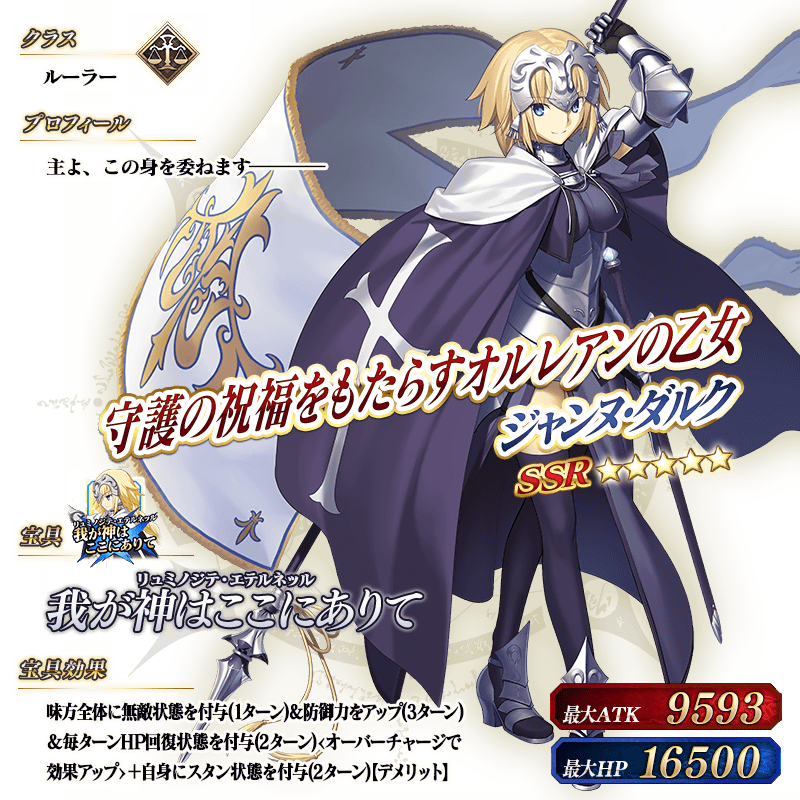
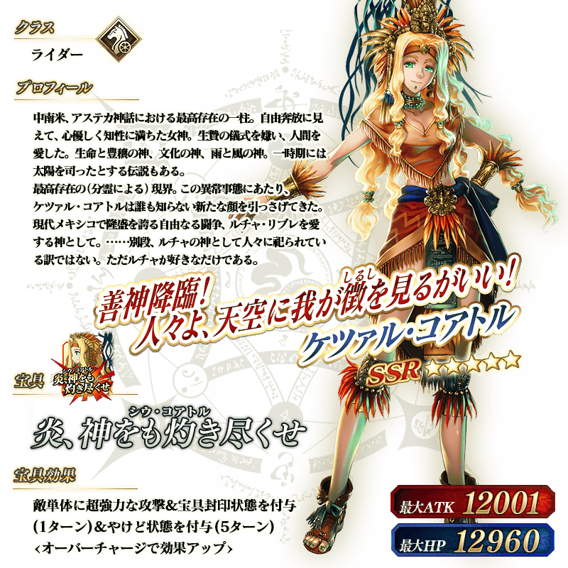
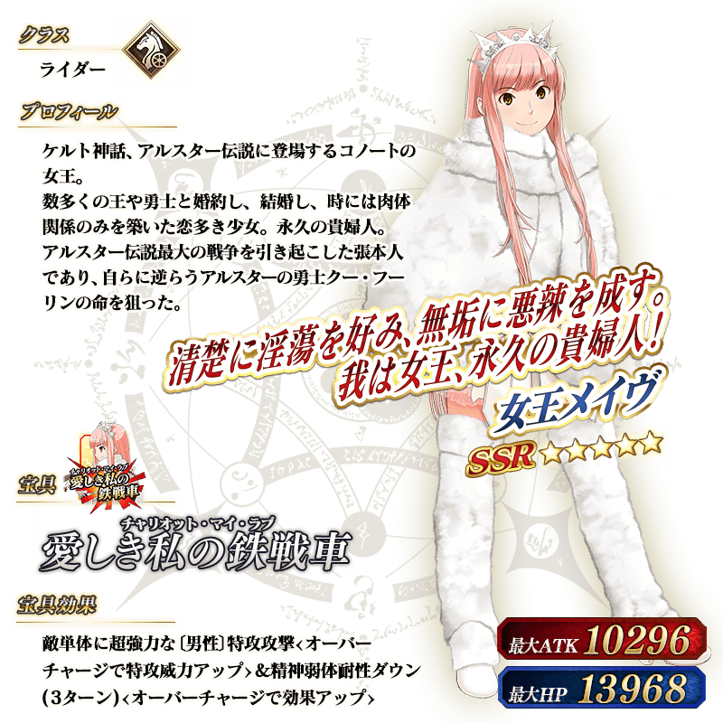
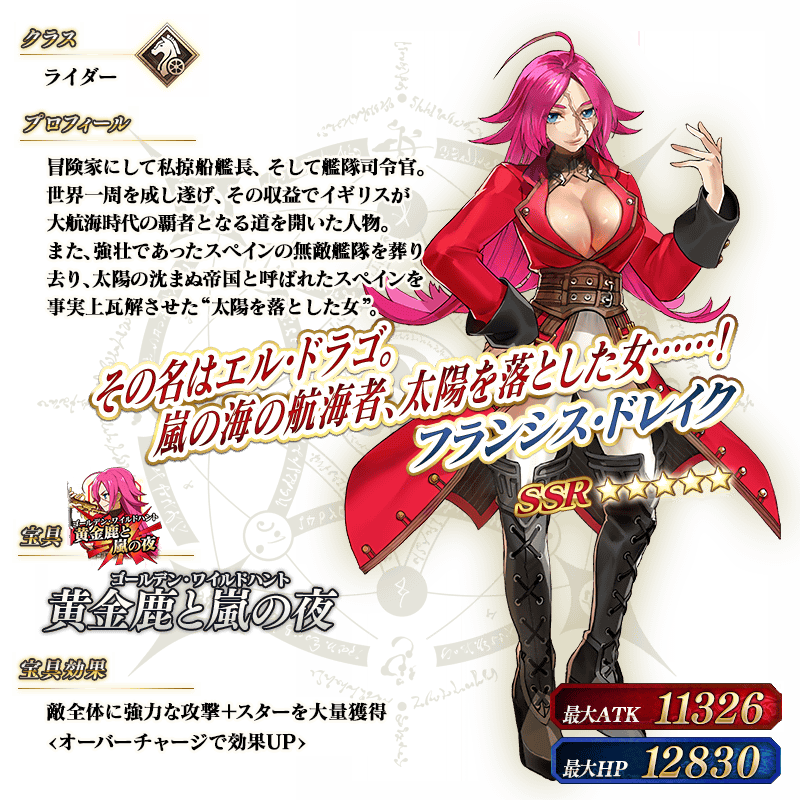

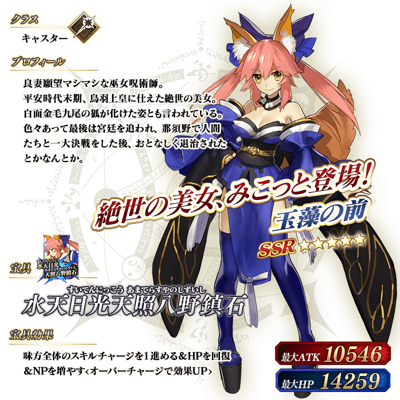
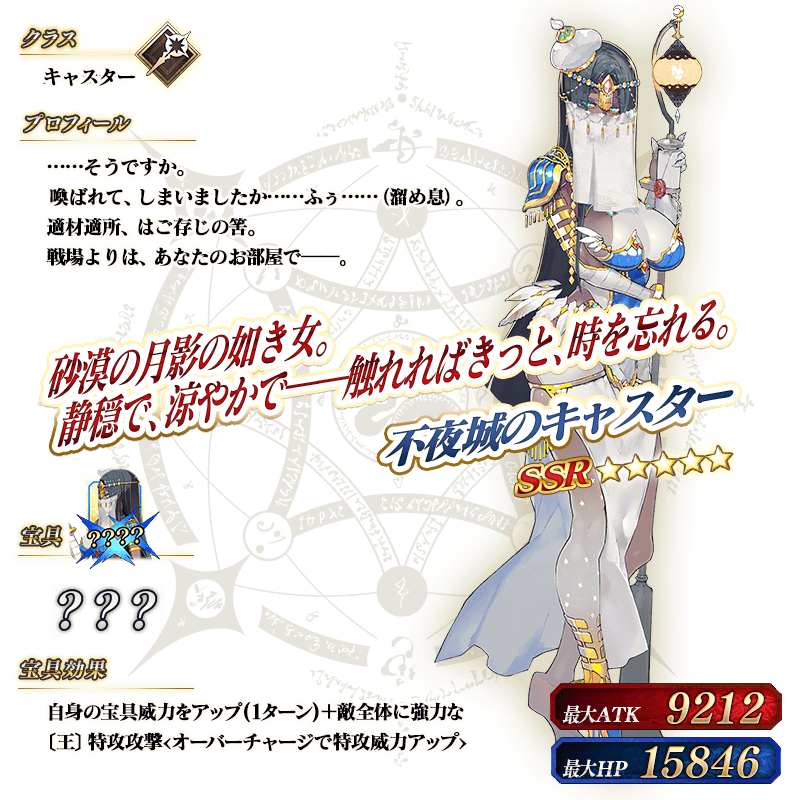
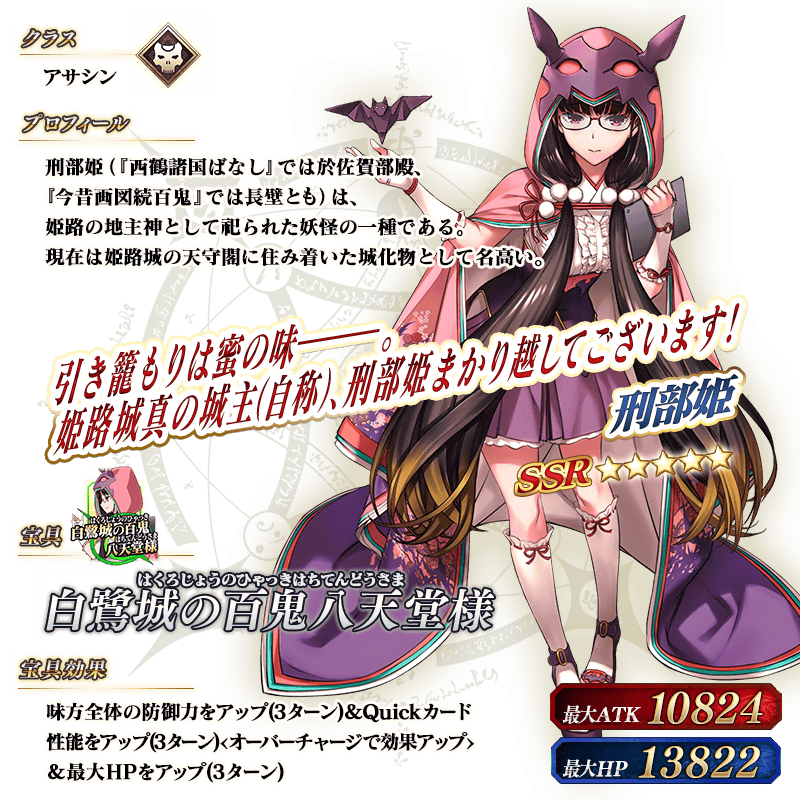
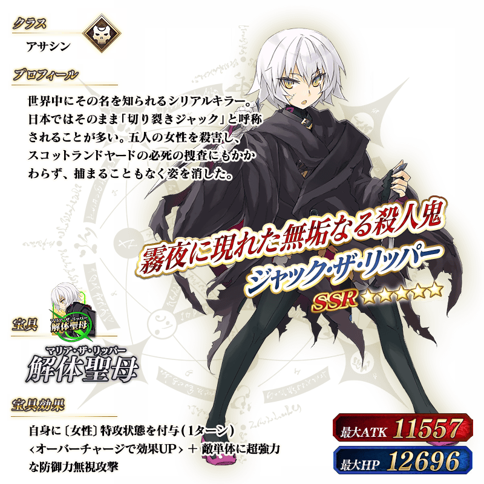
關於可得到豪華報酬和來自Servant情人節禮物的期間限定活動「情人節2018 ～繁榮的巧克力花園 of 情人節～」的詳情請自下述橫幅確認。